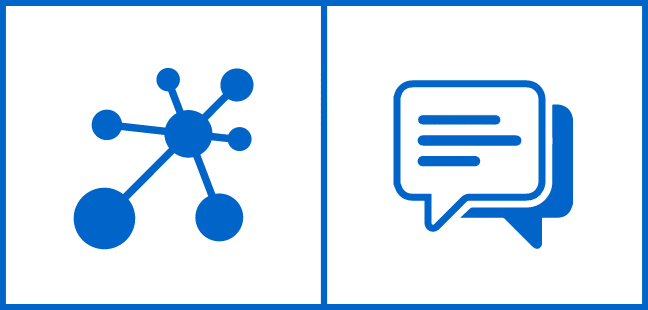
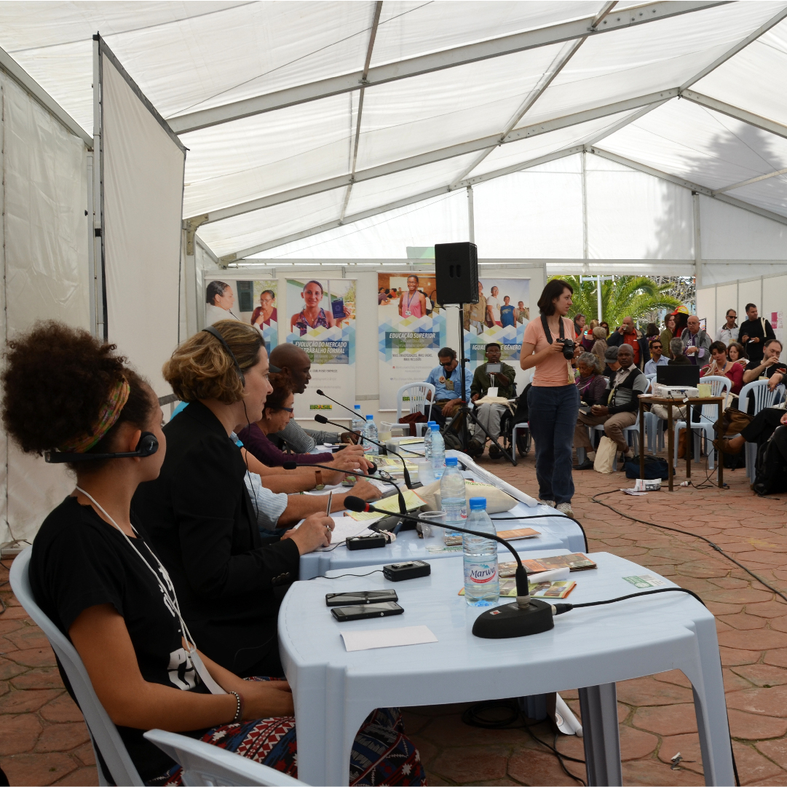
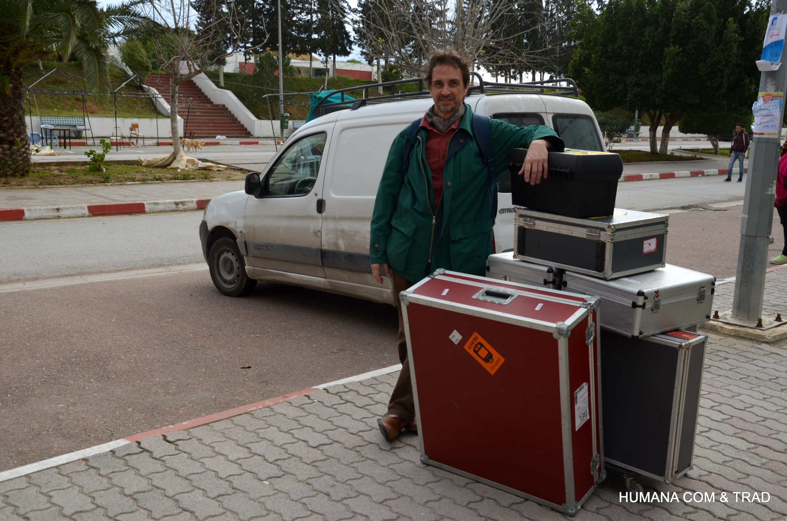
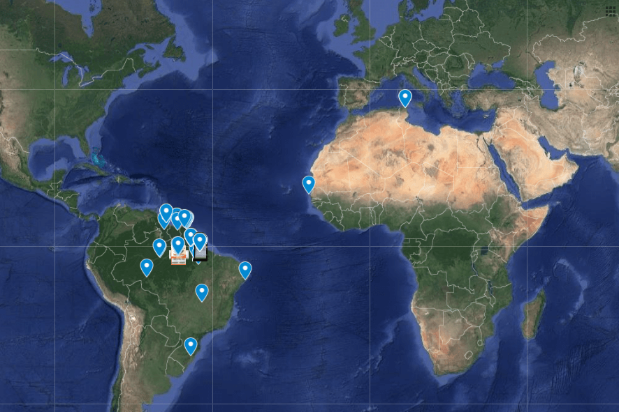
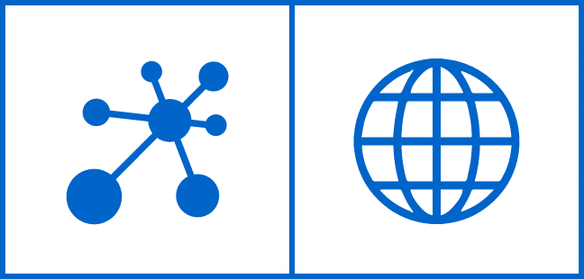

0
Eventos realizados
Soluções sob medida para eventos de todos os portes e segmentos.

Serviço especializado
Comunicação multilíngue de alto padrão para congressos, conferências e eventos corporativos — com intérpretes especializados, equipamentos profissionais e suporte técnico completo.
Por que escolher
A interpretação simultânea permite que participantes de diferentes nacionalidades compreendam o conteúdo em tempo real, sem interrupções — essencial para eventos internacionais de alto impacto.
Mensagens transmitidas instantaneamente, mantendo o ritmo e a fluidez do evento.
Cada ouvinte acompanha palestras e debates no seu idioma, com igual acesso à informação.
Demonstra compromisso com excelência e respeito à diversidade linguística do seu público.
Amplie o impacto do seu evento para delegações, parceiros e stakeholders de todo o mundo.

Nossa trajetória
Há mais de uma década, transformamos comunicação em conexões reais entre pessoas, culturas e ideias — com interpretação simultânea presencial de padrão internacional.

0
Soluções sob medida para eventos de todos os portes e segmentos.
0
Profissionais altamente qualificados e experientes ao seu lado.
0
Comunicação sem barreiras em qualquer lugar do mundo.
0
Atuação global com a mesma excelência em cada detalhe.
A HUMANA nasce em Belém do Pará com foco em excelência linguística e atendimento humanizado.
Presença em congressos e encontros multilíngues no Brasil e no exterior.
Formação de uma rede de intérpretes especializados em temas técnicos e institucionais.
Cobertura de mais de 15 idiomas em eventos corporativos, acadêmicos e diplomáticos.
Mais de 300 eventos realizados com padrão internacional de qualidade e confiabilidade.
Metodologia
Do planejamento ao suporte pós-evento — um processo estruturado para garantir comunicação impecável em cada etapa.
Análise das necessidades do evento, idiomas, público e infraestrutura do local.
Seleção de intérpretes especializados no tema e briefing técnico completo.
Instalação e testes de cabines, receptores, transmissores e sistemas de áudio.
Interpretação simultânea em tempo real com supervisão técnica in loco.
Acompanhamento durante todo o evento e assistência técnica imediata.
Diferenciais
Experiência acumulada em eventos multilíngues, com equipe qualificada e infraestrutura técnica de padrão internacional.
97 intérpretes com formação e experiência em congressos, seminários e eventos corporativos.
Cabines, receptores e sistemas de transmissão de última geração para qualquer porte de evento.
Cobertura em todo o Brasil, com mobilidade logística e agilidade administrativa.
Atuação no Escudo das Guianas, África e conferências globais de alto impacto.
Equipe técnica dedicada antes, durante e após o evento para garantir operação contínua.
Cada evento é analisado individualmente para definir a melhor solução humana e técnica.
Onde atuamos
Grandes encontros científicos e acadêmicos com múltiplos idiomas e salas simultâneas.

Debates técnicos e formativos com interpretação precisa e contextualizada.

Comunicação fluida para plateias internacionais em auditórios de grande porte.

Reuniões de diretoria, lançamentos e convenções empresariais multilíngues.

Encontros institucionais e diplomáticos com rigor terminológico e confidencialidade.

Projetos globais com equipes mobilizadas para qualquer região do mundo.
Infraestrutura
Todos os equipamentos são cuidadosamente selecionados para oferecer qualidade de áudio, estabilidade e conforto durante todo o evento — independentemente do porte ou da localização.
Isolamento acústico para proporcionar máxima concentração e precisão durante toda a interpretação.
Equipamentos confortáveis que permitem ao público selecionar facilmente o idioma desejado.
Tecnologia digital ou infravermelha de alta fidelidade para garantir áudio limpo e estável.
Conforto e excelente qualidade sonora para longos períodos de utilização.
Captação precisa da voz dos palestrantes e intérpretes para uma comunicação clara.
Em campo
Momentos de interpretação simultânea presencial em eventos nacionais e internacionais.
Conheça a HUMANA
Veja como a HUMANA COM & TRAD conecta idiomas, culturas e pessoas em eventos de alto impacto.
Confiança
Dúvidas frequentes
Respostas às principais questões sobre interpretação simultânea presencial e nossos serviços.
É a transmissão oral quase instantânea de um discurso de um idioma para outro, realizada por intérpretes em cabines acústicas. O público ouve a interpretação através de receptores individuais, enquanto o palestrante continua sua apresentação sem interrupções.
Para cada idioma de destino, recomendamos dois intérpretes que se revezam a cada 20–30 minutos, devido à alta concentração exigida. Para eventos longos ou com múltiplos idiomas, a equipe é dimensionada conforme a programação.
Fornecemos cabines, receptores, transmissores, headsets e microfones com instalação, testes prévios e suporte técnico durante todo o evento. A quantidade de equipamentos é calculada com base no número de participantes e idiomas.
Sim. Integramos interpretação presencial com transmissão para participantes remotos, garantindo que todos — presenciais e online — recebam a comunicação multilíngue com a mesma qualidade.
Atendemos mais de 15 idiomas, incluindo português, inglês, espanhol, francês, alemão, italiano, japonês, mandarim e línguas indígenas. A combinação exata depende da disponibilidade de intérpretes especializados no tema do evento.
Solicite um orçamento personalizado e nossa equipe analisará as condições do seu evento para propor a melhor solução de interpretação simultânea presencial.